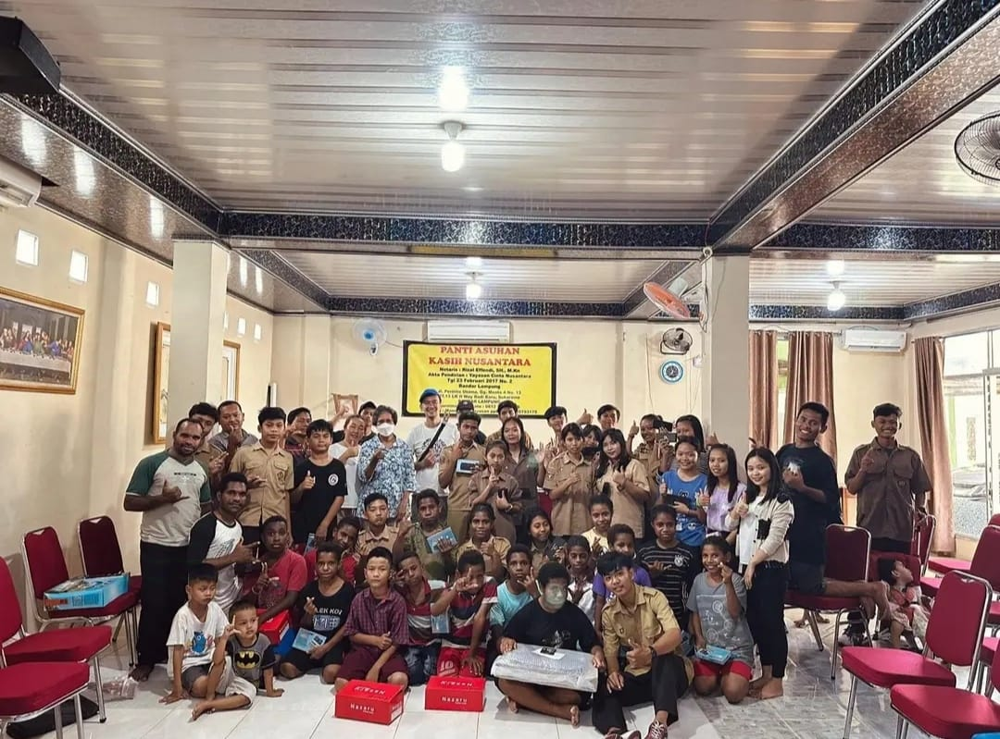

Kunjungan Anak-Anak Panti Asuhan Ke Museum Lampung
Anak-anak dari program School of Life (SOL) Panti Asuhan Kasih Nusantara mengadakan kunjungan edukatif ke Museum Lampung. Kegiatan ini bertujuan untuk memperluas wawasan mereka tentang sejarah dan budaya lokal sekaligus menciptakan pengalaman belajar yang menyenangkan.
Di Museum Lampung, anak-anak diajak mengenal berbagai koleksi menarik, mulai dari pakaian adat khas Lampung, replika rumah tradisional, hingga peninggalan sejarah yang menyimpan banyak cerita. Dengan dipandu oleh ahli museum, mereka dengan antusias mendengarkan penjelasan tentang setiap artefak yang dipamerkan.
Keceriaan dan semangat belajar tampak jelas di wajah anak-anak saat mereka menjelajahi setiap sudut museum. Mereka juga diajak berdialog dan berinteraksi langsung dengan pemandu, yang membantu memahami betapa pentingnya melestarikan warisan budaya kita.
Kunjungan ini tidak hanya memperkaya pengetahuan sejarah dan budaya anak-anak, tetapi juga menumbuhkan rasa cinta terhadap kekayaan budaya lokal. Pembelajaran langsung seperti ini memberikan pengalaman berharga yang sulit dilupakan.
Terima kasih kepada semua pihak yang telah mendukung terselenggaranya kegiatan ini. Semoga kunjungan ini dapat terus menginspirasi anak-anak untuk berani bermimpi, belajar lebih giat, dan menjadi generasi muda yang bangga terhadap budayanya.